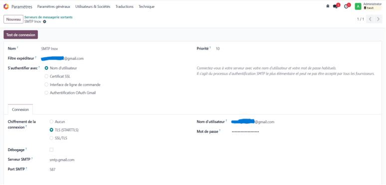
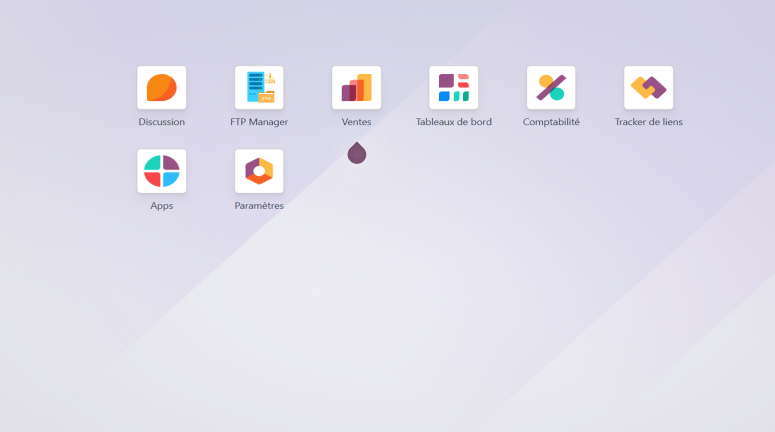
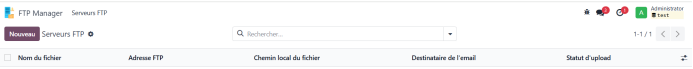
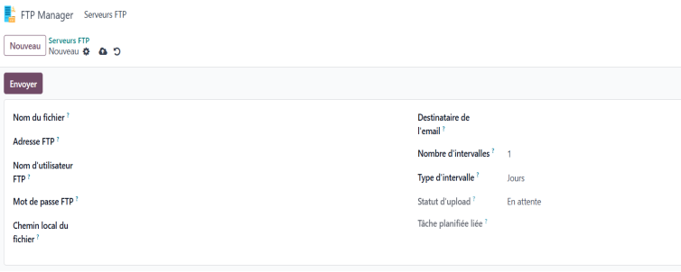

I. Nom du module
FTP Manager
II. Description
À partir de ce module, il est possible d'envoyer à un serveur FTP un fichier situé dans un répertoire donné par l'utilisateur de façon répétitive en fonction d'une période définie.
L'utilisateur doit remplir le formulaire avec :
- Nom du fichier sur le serveur FTP
- Adresse du serveur FTP
- Nom d’utilisateur et mot de passe FTP
- Chemin local du fichier (répertoire + extension)
- Email de confirmation (succès ou échec)
- Nombre d’intervalles
- Type d’intervalle (minutes, heures, jours)
Le champ Statut d’upload affiche l’état du fichier (en attente, succès, échec).
Le champ Tâche planifiée liée affiche le cron associé.
III. Fonctionnalités
- ✅ Envoi d’un fichier dans un serveur FTP
- ✅ Notification email en cas de succès ou d’échec
- ✅ Planification automatique via cron avec notification
IV. Installation
- Copier le module dans le répertoire
addons de votre Odoo
- Mettre à jour la liste des applications
- Installer le module serveur_ftp
V. Configuration
Votre Odoo doit avoir une configuration SMTP correcte pour envoyer des mails.
Exemple de configuration SMTP :
- Aller dans Paramètres puis activer le mode développeur
- Cliquer sur Technique > Serveurs de messagerie sortants
- Cliquer sur Nouveau et renseigner vos infos SMTP

VI. Captures d’écran
Affichage du module après activation :

Vue liste : Cliquer sur Nouveau pour remplir le formulaire

Vue formulaire : Cliquer sur Envoyer après avoir rempli le formulaire

VII. Auteur